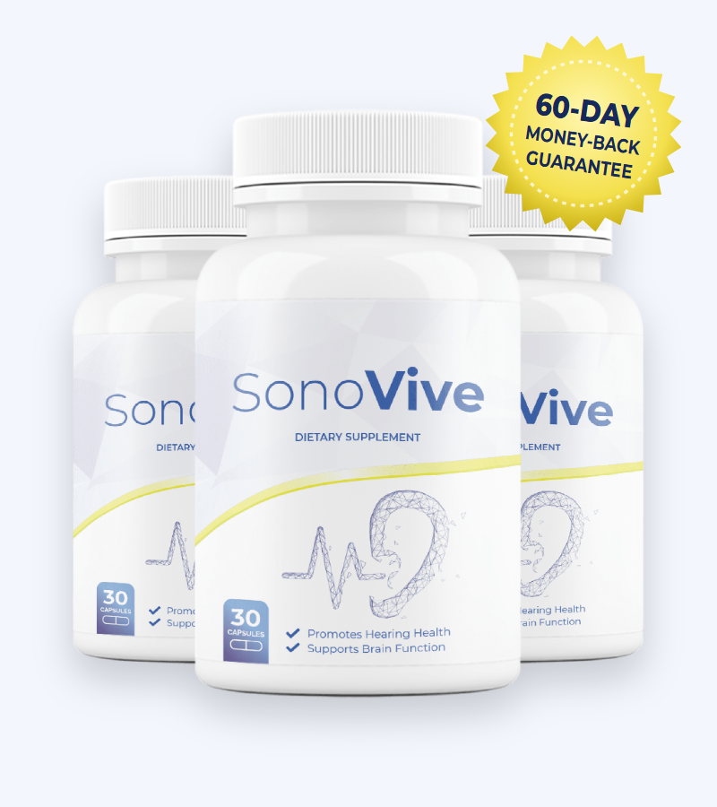
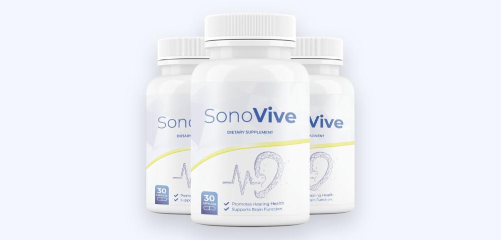

Blood Flow
Ginkgo and vinpocetine are promoted for circulation to the brain and inner ear.*
What's inside SonoVive, what it can and can't do for your hearing, and the interaction warnings to read before you buy

SonoVive (also searched as Sono Vive) is a capsule supplement sold to "maintain healthy hearing" and support brain function. Its sales letter names five ingredients — ginkgo biloba, St. John's wort, bacopa monnieri, vinpocetine and huperzine-A — "and more."
Those are brain-focused herbs and compounds, and two of them carry serious interaction warnings. In this SonoVive review we cover the formula, the research on hearing and tinnitus, who should avoid it, and the current SonoVive price and discount packages on the official website.
SonoVive is a 30-capsule dietary supplement labeled "Promotes Hearing Health — Supports Brain Function." It's sold through a long sales letter written in the voice of "Sam Olsen," described as a 65-year-old retired medical chemist from near Philadelphia, with checkout handled by BuyGoods.
The letter says the formula combines "amazing plant extracts, such as ginkgo biloba, St. John's wort, bacopa monnieri, vinpocetine, huperzine-A and more." It doesn't publish a supplement facts label, so the full ingredient list and amounts aren't known.
We also noticed the letter refers to "the SonoVive dropper," while the bottle shown is clearly capsules — a sign the text was reused from another product. The same letter template appears on other supplements from this network.
SonoVive is a supplement, not a treatment for hearing loss or tinnitus.
Ginkgo and vinpocetine are promoted for circulation to the brain and inner ear.*
Huperzine-A slows the breakdown of acetylcholine, a messenger used by nerve cells.*
St. John's wort and bacopa are used for mood and memory — tinnitus is often worse with stress.*
The idea is that hearing depends on the brain as much as the ears, which is true: the brain processes sound, and tinnitus involves changes in how it does that. But none of these ingredients has been shown to restore hearing in people, and the doses in SonoVive are unknown.
Notably, these are the same ingredients found in many "brain booster" products — essentially a nootropic formula with a hearing-focused label.
The five SonoVive ingredients named in the official sales letter. Amounts are not disclosed.
| Ingredient | What it is | Typical use |
|---|---|---|
| Ginkgo biloba | Leaf extract | Circulation, memory, tinnitus (marketed) |
| St. John's wort | Hypericum perforatum herb | Mild to moderate low mood |
| Bacopa monnieri | Ayurvedic herb | Memory and learning |
| Vinpocetine | Synthetic compound derived from periwinkle | Brain blood flow (marketed) |
| Huperzine-A | Compound from Chinese club moss | Memory; acetylcholine support |
The letter says the formula includes these "and more"; the other ingredients are not named.
Two ingredients deserve special attention. St. John's wort is one of the most interaction-prone herbs there is. Vinpocetine is not a natural plant extract but a synthetic compound; the FDA has warned that it may cause miscarriage or harm fetal development, and it is regulated as a drug in several countries.
Our take: SonoVive is a brain-supplement formula with real pharmacological activity. That makes the missing label and doses a bigger concern than usual.
| Ingredient | Typical studied dose | Evidence for hearing or tinnitus |
|---|---|---|
| Ginkgo biloba | 120–240 mg extract | Cochrane and other reviews: no meaningful benefit for tinnitus |
| Vinpocetine | 5–30 mg | A few small, older studies; not reliable |
| Huperzine-A | 50–200 mcg | Studied for memory; no good hearing trials |
| Bacopa monnieri | 300 mg extract | Modest memory benefits over 12 weeks; nothing on hearing |
| St. John's wort | 300 mg 3×/day | Mood only; no hearing benefit |
Ginkgo is the most studied supplement for tinnitus, and the results are disappointing: high-quality reviews have found no significant improvement compared with placebo. The memory herbs in SonoVive have some evidence for cognition but none for hearing.
The "FDA approved facility" line on the sales page is misleading — the FDA registers and inspects facilities but doesn't approve them, and it doesn't approve dietary supplements.
Most hearing loss in adults comes from age and noise exposure, and the inner ear's hair cells don't grow back. That's why prevention and hearing technology matter far more than supplements.
An audiologist can measure your hearing and look for treatable causes like earwax or fluid. A baseline test also lets you track changes over time.
Modern hearing aids — including over-the-counter models — improve communication and are linked to lower risk of cognitive decline in people with hearing loss.
Use earplugs at concerts and around power tools, and follow the 60/60 rule for headphones: no more than 60% volume for 60 minutes at a time.
Sound therapy, cognitive behavioral therapy and hearing aids help most people with tinnitus feel less bothered by it.
Some antibiotics, high-dose aspirin, loop diuretics and chemotherapy drugs can harm hearing; ask your doctor if you notice changes.
Good blood pressure, blood sugar control and not smoking protect the tiny blood vessels of the inner ear.
Supplement ads often link hearing and memory, and there is a genuine connection — just not the one the ads suggest.
Large reviews, including a major report on dementia prevention published in The Lancet, list untreated hearing loss in mid-life as one of the biggest modifiable risk factors for later cognitive decline. When the brain receives less sound, it has to work harder to understand speech, and people with hearing loss often become more socially isolated.
In a large randomized trial of older adults, those at higher risk who received hearing aids and audiology support showed slower cognitive decline over three years than those who only received health education. Hearing aids don't restore damaged hair cells, but they keep the brain engaged with sound and conversation.
In other words, the most evidence-based way to protect your brain through your ears is to treat hearing loss directly, rather than relying on memory herbs.
Possible benefits based on the named ingredients.*
Bacopa and huperzine-A have some evidence for memory and learning.*
St. John's wort is used for mild low mood — with major interaction caveats.*
No ingredient has strong evidence for improving hearing or tinnitus.
The 60-day guarantee lets you test it with your doctor's approval.
SonoVive's ingredients are pharmacologically active, so the safety profile matters more than with most supplements.
SonoVive is a brain-supplement formula marketed for hearing. Its ingredients are real and active, but none has good evidence for improving hearing or tinnitus, and two of them — St. John's wort and vinpocetine — make it unsuitable for many people, including anyone on common prescription drugs or who could become pregnant.
If you're a healthy adult on no medication and your doctor agrees, the 60-day guarantee lets you test it. For hearing itself, a hearing test and, where needed, hearing aids remain the most effective steps.
Visit the SonoVive Official Website| Option | What it does | Typical cost | Evidence |
|---|---|---|---|
| SonoVive | Undisclosed brain-herb blend | $49–$69 a month | None on the product |
| Hearing test | Finds the cause and level of loss | Often covered | Essential first step |
| OTC or prescription hearing aids | Amplifies sound | A few hundred dollars and up | Strong |
| Sound therapy / CBT for tinnitus | Reduces tinnitus distress | Free apps to clinic fees | Good |
| Ginkgo alone | Single herb | $10 a month | No benefit for tinnitus in reviews |
The seller says SonoVive is only available on its own page. Searches for the SonoVive official website also bring up review and look-alike sites. To buy the genuine product:
Each SonoVive bottle is a 30-day supply, covered by the 60-day money-back guarantee.
30-Day Supply
$69/bottle
Free US shipping
180-Day Supply
$49/bottle
Biggest discount
90-Day Supply
$59/bottle
Free US shipping
Prices checked on the official order page on October 23, 2026 and may change. International orders pay shipping. One-time payment.
The SonoVive price drops with larger packages:
The $99, $297 and $594 "regular" prices on the order page are comparison figures rather than real past prices.
Because the guarantee is 60 days, buying six bottles means most of them arrive after the refund window would let you judge results. If you're unsure — or need to check interactions with your doctor — start with one or three bottles.

SonoVive comes with a 60-day money-back guarantee. The seller says to contact them within 60 days of purchase if you're not happy, even if you've used the whole bottle, and they'll issue a full refund.
Start the process well before day 60, and keep your BuyGoods receipt handy.
Try SonoVive Risk-FreeSonoVive is a dietary supplement sold for hearing and brain support. Each bottle contains 30 capsules. The sales page names ginkgo biloba, St. John's wort, bacopa monnieri, vinpocetine and huperzine-A, and says the formula contains more ingredients that it doesn't list.
There are no published studies on SonoVive. Its best-known ingredient for tinnitus, ginkgo biloba, has been tested in many trials and large reviews found no meaningful benefit over placebo. The other ingredients are studied mainly for memory, not hearing. Treat any effect on hearing as uncertain.
SonoVive contains St. John's wort, which interacts with many medicines — including antidepressants, birth control pills, blood thinners, heart and HIV drugs and transplant medicines — and vinpocetine, which the FDA warns pregnant women and women who could become pregnant not to take. Ask your doctor or pharmacist before using it if you take any medication.
On the official website SonoVive costs $69 for one bottle, $177 for three bottles ($59 each) and $294 for six bottles ($49 each). Shipping is free in the US on every package.
The discount comes from buying more bottles: the price drops from $69 to $59 per bottle for three and $49 per bottle for six. We didn't see separate coupon codes on the official page.
SonoVive is sold through its own sales page with checkout by BuyGoods. The seller says it is not available anywhere else, so other listings may not be genuine or include the 60-day guarantee.
The bottle says 30 capsules. Part of the sales letter mentions a "dropper," which appears to be left over from another product's text; the product shown is a capsule bottle.
The sales page doesn't give directions, so follow the label on your bottle. With 30 capsules described as a 30-day supply, that suggests one capsule a day.
Possible side effects include stomach upset, headache, dizziness, sensitivity to sunlight (St. John's wort), and nausea or a slow heart rate (huperzine-A). Ginkgo may increase bleeding risk with blood thinners.
No. The order page says it's a one-time payment with no subscription or hidden charges.
SonoVive comes with a 60-day money-back guarantee. The seller says to contact them within 60 days of purchase, even if you used the whole bottle, for a full refund.
Yes. A hearing test can find treatable causes such as earwax, infections or medication side effects, and hearing aids are the most effective help for age-related hearing loss. Sudden hearing loss is an emergency.
Get SonoVive for as little as $49 per bottle on the 6-bottle package with free US shipping and a 60-day money-back guarantee. Check with your doctor first if you take any prescription medicine.
Order SonoVive Now